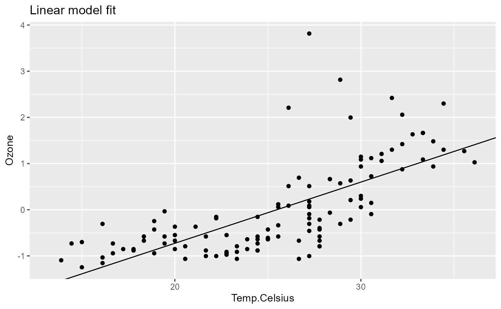

The possibility to combine pipelines basically allows to modularize the pipeline creation process. This is especially useful when you have a set of pipelines that are used in different contexts and you want to avoid code duplication.
In this vignette we will also introduce the pipeflow alias functions,
that is, for each member function of a pipeline, there is an alias
function, which allows to create chain pipeline steps using R’s native
pipe operator |>. For example, the add
function has an alias pipe_add (see below).
Define two pipelines
Let’s define one pipeline that is used for data_preprocessing and one that does the modeling.
Data preprocessing pipeline:
library(pipeflow)
library(ggplot2)
pip1 <- pipe_new(
"preprocessing",
data = airquality
) |>
pipe_add(
"data_prep",
function(data = ~data) {
replace(data, "Temp.Celsius", (data[, "Temp"] - 32) * 5/9)
}
) |>
pipe_add(
"standardize",
function(
data = ~data_prep,
yVar = "Ozone"
) {
data[, yVar] <- scale(data[, yVar])
data
}
)
pip1
# step depends out keepOut group state
# <char> <list> <list> <lgcl> <char> <char>
# 1: data [NULL] FALSE data New
# 2: data_prep data [NULL] FALSE data_prep New
# 3: standardize data_prep [NULL] FALSE standardize NewModeling pipeline:
pip2 <- pipe_new(
"modeling",
data = airquality
) |>
pipe_add(
"fit",
function(
data = ~data,
xVar = "Temp",
yVar = "Ozone"
) {
lm(paste(yVar, "~", xVar), data = data)
}
) |>
pipe_add(
"plot",
function(
model = ~fit,
data = ~data,
xVar = "Temp",
yVar = "Ozone",
title = "Linear model fit"
) {
coeffs <- coefficients(model)
ggplot(data) +
geom_point(aes(.data[[xVar]], .data[[yVar]])) +
geom_abline(intercept = coeffs[1], slope = coeffs[2]) +
labs(title = title)
}
)
pip2
# step depends out keepOut group state
# <char> <list> <list> <lgcl> <char> <char>
# 1: data [NULL] FALSE data New
# 2: fit data [NULL] FALSE fit New
# 3: plot fit,data [NULL] FALSE plot NewGraphically, the two pipelines look as follows:
Combine pipelines
Next we combine the two pipelines. We can do this by using the
append function.
pip <- pip1$append(pip2)
pip
# step depends out keepOut group state
# <char> <list> <list> <lgcl> <char> <char>
# 1: data [NULL] FALSE data New
# 2: data_prep data [NULL] FALSE data_prep New
# 3: standardize data_prep [NULL] FALSE standardize New
# 4: data.modeling [NULL] FALSE data New
# 5: fit data.modeling [NULL] FALSE fit New
# 6: plot fit,data.modeling [NULL] FALSE plot NewFirst of all, note that the data step of the second
pipeline has been appended with the name of the second pipeline. In
particular, the first step of the second pipeline has been renamed from
data to data.modeling (line 4 in the
step column) and likewise the dependencies of the second
pipeline have been updated (see lines 5-6 in the depends
column).
That is, when appending two pipelines, pipeflow ensures
that the step names remain unique in the resulting combined pipeline and
therefore automatically renames duplicated step names if necessary.
Now, as can be also seen from the graphical representation of the pipeline,
the two pipelines are not yet connected. To make actual use of the
combined pipeline, we therefore want to use the output of the first
pipeline as input of the second pipeline, that is, we want to use the
output of the standardize step as the data parameter input
in the data.modeling step. One way to achieve this would be
to use the replace function as described earlier in the
vignette modify the pipeline, for
example:
pip$replace_step("data.modeling", function(data = ~standardize) data)
pip
# step depends out keepOut group state
# <char> <list> <list> <lgcl> <char> <char>
# 1: data [NULL] FALSE data New
# 2: data_prep data [NULL] FALSE data_prep New
# 3: standardize data_prep [NULL] FALSE standardize New
# 4: data.modeling standardize [NULL] FALSE data.modeling New
# 5: fit data.modeling [NULL] FALSE fit Outdated
# 6: plot fit,data.modeling [NULL] FALSE plot OutdatedRelative indexing
Since the name of the last step might not always be known1, the
pipeflow package also provides a relative position indexing
mechanism, which allows to rewrite the above command as follows:
pip$replace_step("data.modeling", function(data = ~-1) data)
pip
# step depends out keepOut group state
# <char> <list> <list> <lgcl> <char> <char>
# 1: data [NULL] FALSE data New
# 2: data_prep data [NULL] FALSE data_prep New
# 3: standardize data_prep [NULL] FALSE standardize New
# 4: data.modeling standardize [NULL] FALSE data.modeling New
# 5: fit data.modeling [NULL] FALSE fit Outdated
# 6: plot fit,data.modeling [NULL] FALSE plot OutdatedGenerally speaking, the relative indexing mechanism allows to refer
to steps positioned above the current step. The index ~-1
can be interpreted as “go one step back”, ~-2 as “go two
steps back”, and so on.
Since the scenario of connecting two pipelines is so common and to
avoid having to do the above replacement steps manually, the
append function actually provides an argument
outAsIn that allows for appending and “connecting” both
pipelines in one go:
pip <- pip1$append(pip2, outAsIn = TRUE)
pip
# step depends out keepOut group state
# <char> <list> <list> <lgcl> <char> <char>
# 1: data [NULL] FALSE data New
# 2: data_prep data [NULL] FALSE data_prep New
# 3: standardize data_prep [NULL] FALSE standardize New
# 4: data.modeling standardize [NULL] FALSE data.modeling New
# 5: fit data.modeling [NULL] FALSE fit Outdated
# 6: plot fit,data.modeling [NULL] FALSE plot OutdatedIf we inspect the data.modeling step, we see that “under
the hood” the original step indeed has been replaced by the output of
the last step of the first pipeline using the same relative indexing
mechanism we did manually before.
pip$get_step("data.modeling")[["fun"]]
# [[1]]
# function (data = ~-1)
# data
# <bytecode: 0x000002309e0291b0>
# <environment: 0x000002309b395698>Run combined pipeline
Let’s now run the combined pipeline and inspect the plot.
pip$run()
# INFO [2024-12-22 15:47:01.770] Start run of 'preprocessing.modeling' pipeline:
# INFO [2024-12-22 15:47:01.818] Step 1/6 data
# INFO [2024-12-22 15:47:01.827] Step 2/6 data_prep
# INFO [2024-12-22 15:47:01.846] Step 3/6 standardize
# INFO [2024-12-22 15:47:01.849] Step 4/6 data.modeling
# INFO [2024-12-22 15:47:01.851] Step 5/6 fit
# INFO [2024-12-22 15:47:01.855] Step 6/6 plot
# INFO [2024-12-22 15:47:01.866] Finished execution of steps.
# INFO [2024-12-22 15:47:01.866] Done.
pip$get_out("plot")
# Warning: Removed 37 rows containing missing values or values outside the scale range
# (`geom_point()`).As we can see, the plot shows the linear model fit using the standardized data. We can now go ahead and for example change the x-variable of the model and rerun the pipeline.
pip$set_params(list(xVar = "Temp.Celsius"))
pip$run()
# INFO [2024-12-22 15:47:02.471] Start run of 'preprocessing.modeling' pipeline:
# INFO [2024-12-22 15:47:02.472] Step 1/6 data - skip 'done' step
# INFO [2024-12-22 15:47:02.473] Step 2/6 data_prep - skip 'done' step
# INFO [2024-12-22 15:47:02.474] Step 3/6 standardize - skip 'done' step
# INFO [2024-12-22 15:47:02.475] Step 4/6 data.modeling - skip 'done' step
# INFO [2024-12-22 15:47:02.476] Step 5/6 fit
# INFO [2024-12-22 15:47:02.481] Step 6/6 plot
# INFO [2024-12-22 15:47:02.492] Finished execution of steps.
# INFO [2024-12-22 15:47:02.493] Done.
pip$get_out("plot")
# Warning: Removed 37 rows containing missing values or values outside the scale range
# (`geom_point()`).
When creating these pipelines, usually there will be a lot of steps calculating intermediate results and only a few steps contain the final results that we are interested in. In the above example, we were interested in the final plot output. In a real-world scenario, the pipeline would contain many more steps that are not of interest to us. To see how to conveniently tag, collect and possibly group the output of those final steps, see the next vignette Collecting output.